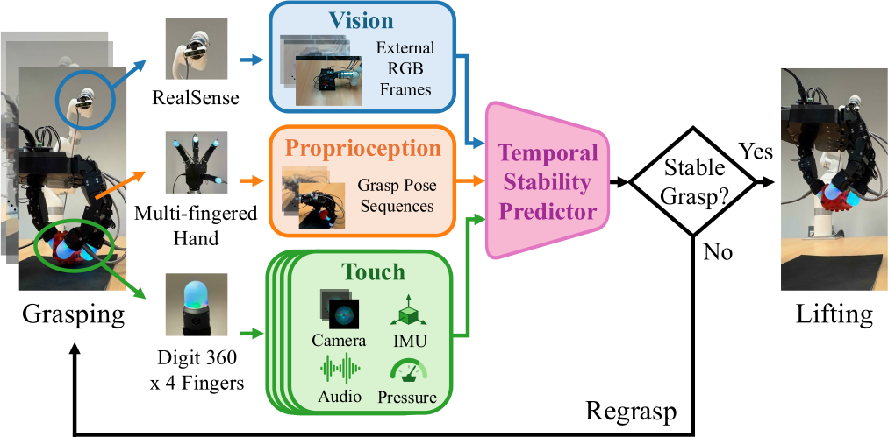
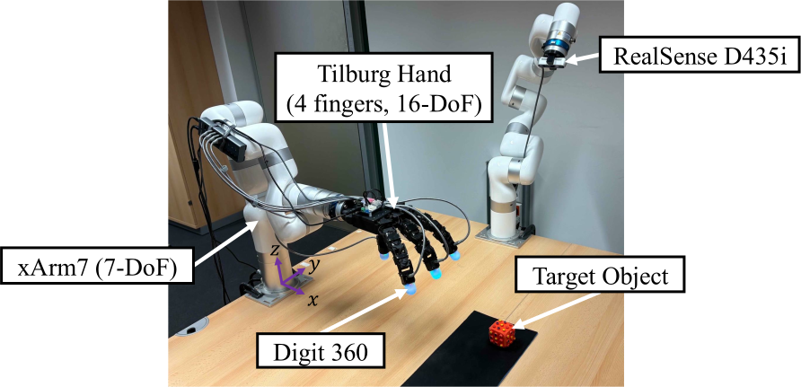
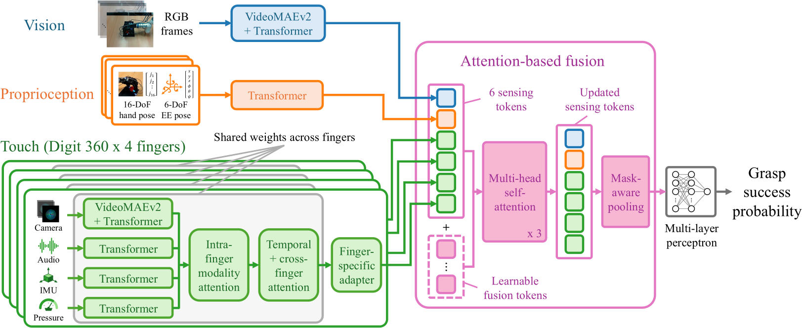
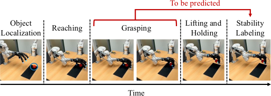
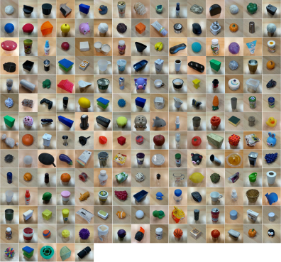
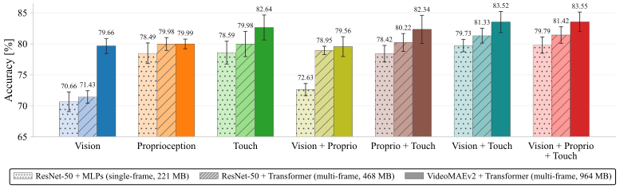
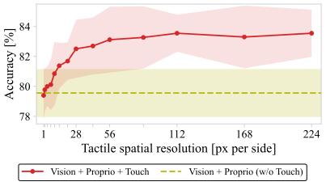
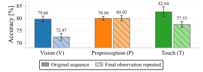
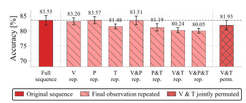
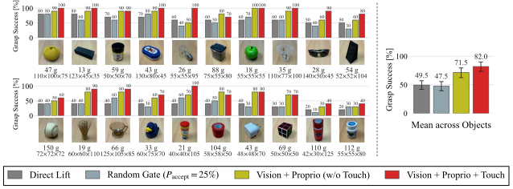

Stable grasping with a multi-fingered hand depends on how contacts form and evolve as the fingers close around an object. We investigate how high-resolution, dynamic tactile sensing supports grasp stability prediction and model-guided grasping. Using a dataset of 10,000 grasp trials across 200 objects, we train temporal multimodal models to predict post-lift stability from pre-lift observations. On the robot, the learned predictor acts as an online stability gate: the robot lifts when confidence is high and otherwise releases its grip and attempts a regrasp.
Temporal Visuo-Tactile Learning
for Dexterous Grasp Stability
LASR Lab, TU Dresden, Germany
Overview

Hardware Setup

Our platform uses a 7-DoF xArm7 with a four-fingered, 16-DoF Tilburg Hand. Each fingertip carries a Digit 360 sensor that records tactile images, audio, inertial measurements, and pressure. A RealSense D435i RGB-D camera on a stationary arm provides an external view of the workspace. Visual observations, hand and arm proprioception, and fingertip tactile streams are recorded continuously throughout each grasp trial.
Temporal Multimodal Learning

The model observes a pre-lift window anchored at grasp initiation. VideoMAEv2 backbones encode external RGB and tactile image sequences, while Transformer branches encode proprioception and other tactile streams. Tactile features are integrated across modalities, time, and fingers, then fused with vision and proprioception to predict the probability of a stable grasp.
During deployment, the robot lifts only when the predicted probability exceeds a fixed threshold. Otherwise, it opens the hand, adjusts the end-effector position, and samples another grasp. This uses learned contact cues without explicit contact or force modeling.
Data Collection

We designed an automated data collection procedure comprising object localization, randomized reaching and grasping, lifting, stability labeling, and resetting. A trial is labeled successful when the object is lifted and held for three seconds without dropping.

The dataset of 10,000 grasp trials covers 200 objects with diverse shapes, sizes, and materials. The outcomes are nearly balanced: 47.1% stable and 52.9% unstable trials. Each trial records external RGB frames, proprioception, tactile images, audio, IMU, pressure, and commanded actions asynchronously throughout the full grasp attempt, together with phase start times. These recordings can be resampled over any interval into synchronized multimodal sequences; the pre-lift window used in this paper is one example. This flexibility supports broader uses, including contact dynamics modeling and multimodal representation learning.
Results
Effect of Sensing Modalities and Backbone Design

We evaluate stability prediction using 5-fold object-disjoint cross-validation, holding out all trials from each validation object. Touch-enabled models achieve the highest mean accuracies in the VideoMAEv2-based modality comparison. Removing touch from the vision-proprioception-touch model reduces accuracy by 3.99 percentage points, from 83.55% to 79.56%, supporting the value of local contact cues. For vision-proprioception-touch inputs, the static single-frame baseline achieves 79.79% accuracy, compared with 81.42% for ResNet-Transformer and 83.55% for VideoMAEv2, suggesting the value of expressive temporal modeling.
The following controlled input ablations examine spatial contact detail and temporal tactile information while keeping the VideoMAEv2-based architecture and training protocol fixed. Each condition is trained separately, with the same input modification applied during training and evaluation.
Effect of Tactile Spatial Resolution

We area-downsample tactile frames to lower resolutions and bilinearly restore them to 224 × 224 before encoding, keeping all other inputs and training settings fixed. At 1 × 1, only mean RGB values remain, yielding 79.40% accuracy, close to the non-tactile baseline. Accuracy improves sharply up to 28 × 28, then more gradually, reaching 83.55% at both 112 × 112 and 224 × 224, supporting the value of spatial contact detail.
Effect of Temporal Observations

Repeating a stream's final observation throughout the window preserves the final grasp state while removing its temporal variation. Applied to single-modality models, it lowers vision-only accuracy from 79.66% to 72.47% and touch-only from 82.64% to 77.53%, while proprioception-only is nearly unchanged at about 80%.

In the vision-proprioception-touch model, repeating vision or proprioception has little effect, whereas repeating touch lowers accuracy by 2.07 percentage points, from 83.55% to 81.48%.
Applying the same random permutation to the external RGB and four tactile-camera clips preserves all frames and their alignment across image streams, but disrupts their temporal order. Accuracy falls to 81.93%, a 1.62-point reduction. These results support the value of tactile dynamics and temporal structure beyond the final contact state.
Real-Robot Grasping Evaluation

We deploy the learned predictors on the real robot as online stability gates that decide whether to lift or regrasp. On 20 unseen objects, the tactile stability gate achieves 82.0% success among executed lifts (164/200), improving on the non-tactile gate by 10.5 percentage points.
The videos above show example grasping sequences leading to successful lifts with the tactile stability gate. Qualitatively, contact cues from multiple fingers appeared to help identify partial or off-center grasps, particularly on visually ambiguous objects such as the light bulb.
The paper provides more detailed experimental results and additional analyses not shown here, including the effects of dataset size, tactile submodalities, and finger-specific inputs, as well as the relationship between fingertip contacts and grasp success.
Summary
- We collect a dataset of 10,000 multimodal dexterous grasp trials across 200 everyday objects using four Digit 360 fingertips. Vision, proprioception, touch, and commanded actions are continuously recorded throughout each grasp, with phase annotations and stability labels supporting reuse beyond grasp stability prediction.
- We systematically study what drives grasp stability prediction from pre-lift sequences of vision, proprioception, and touch. Modality and encoding comparisons, together with controlled analyses of tactile spatial resolution and temporal observations, show that high-resolution, dynamic touch provides a particularly strong stability signal.
- We deploy the learned predictor on the real robot to guide online decisions to lift or regrasp. On 20 unseen objects, the tactile stability gate achieves 82.0% success among executed lifts, exceeding the non-tactile gate by 10.5 percentage points.
BibTeX
@misc{nakahara2026temporal,
title = {Temporal Visuo-Tactile Learning for Dexterous Grasp Stability},
author = {Nakahara, Ken and Buvailik, Aleksei and
Kotov, Prokhor and Calandra, Roberto},
year = {2026},
eprint = {2610.10283},
archivePrefix = {arXiv},
primaryClass = {cs.RO},
url = {https://arxiv.org/abs/2610.10283}
}Acknowledgments
This work was partly supported by the project GeniusRobot (01IS24083) funded by the Federal Ministry of Research, Technology and Space (BMFTR), by BMFTR in the DAAD project 57616814 (SECAI, School of Embedded Composite AI), by BMFTR under the Robotics Institute Germany (RIG), and by the German Research Foundation (DFG) under the Cluster of Excellence CARE: Climate-Neutral And Resource-Efficient Construction (EXC 3115, project number 533767731).
We thank the ZIH at TU Dresden for providing computing resources.